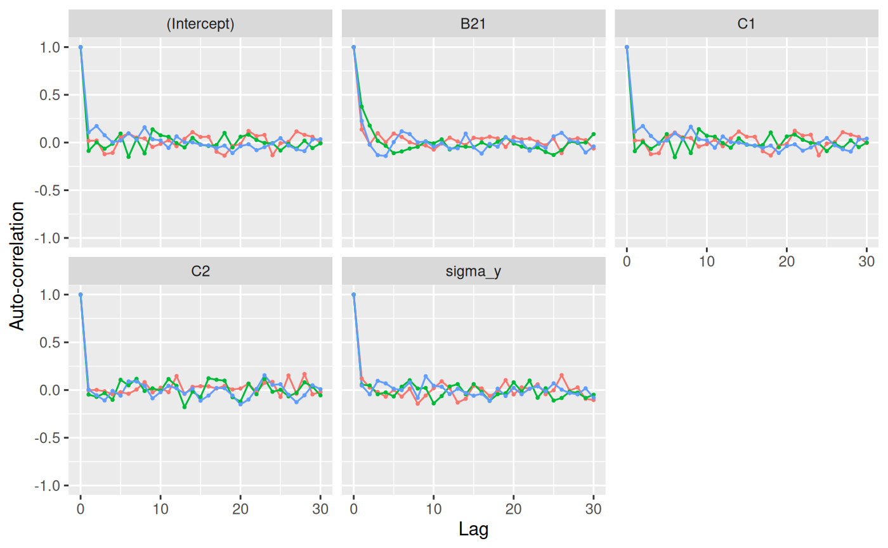

This function obtains the autocorrelation of the MCMC samples in an JointAI
object via coda::autocorr.diag(). autocorr_plot() visualizes the results
using ggplot2.
Usage
auto_corr(object, lags = 0:30, by_chain = TRUE, outcome = 1L,
start = NULL, end = NULL, thin = NULL)
auto_corr_plot(object, lags = 0:30, by_chain = TRUE, outcome = 1L,
start = NULL, end = NULL, thin = NULL)Arguments
- object
an object of class JointAI
- lags
a numeric vector indicating the lags to consider
- by_chain
logical; should the autocorrelation be computed for each chain separately?
- outcome
integer; index of the outcome model for which the autocorrelation should be plotted
- start
the first iteration of interest (see
window.mcmc)- end
the last iteration of interest (see
window.mcmc)- thin
thinning interval (integer; see
window.mcmc). For example,thin = 1(default) will keep the MCMC samples from all iterations;thin = 5would only keep every 5th iteration.
Value
a matrix or a list of matrix objects if by_chain = TRUE, or
a ggplot() object for autocorr_plot().
Examples
fit <- lm_imp(y ~ C1 + C2 + B2, data = wideDF, n.iter = 200)
auto_corr(fit)
#> [[1]]
#> (Intercept) C1 C2 B21 sigma_y
#> Lag 0 1.000000000 1.000000000 1.000000000 1.000000000 1.000000000
#> Lag 1 0.017179937 0.020694821 -0.002121199 0.136577680 0.120621930
#> Lag 2 0.020563144 0.020865262 0.001475377 -0.018264986 0.025769498
#> Lag 3 -0.122003260 -0.122025985 -0.013130288 0.097729217 -0.020806442
#> Lag 4 -0.108144868 -0.111613048 -0.044398926 0.003137020 -0.069453046
#> Lag 5 0.057520479 0.059788582 -0.022647412 0.093938503 0.002347658
#> Lag 6 0.096012273 0.104498446 -0.039326312 0.058884565 -0.069265392
#> Lag 7 0.051213307 0.053587403 0.005462839 0.002731231 0.013928368
#> Lag 8 0.042975404 0.047760445 0.083044097 -0.023457280 -0.143780196
#> Lag 9 -0.046267869 -0.042710806 -0.024361290 -0.030803693 -0.057697498
#> Lag 10 -0.014760317 -0.017520208 0.024367661 -0.074288285 0.018978058
#> Lag 11 0.023360958 0.028393776 -0.022697208 -0.010565216 0.091077427
#> Lag 12 -0.038851678 -0.039570629 0.146404889 0.051024643 0.019724522
#> Lag 13 0.038168415 0.041995309 -0.040851751 0.010679584 -0.131209068
#> Lag 14 0.108806635 0.114885875 0.033287833 -0.025468938 -0.091740112
#> Lag 15 0.058071761 0.060338104 0.039961594 0.050176969 0.045145241
#> Lag 16 0.060391377 0.060195339 0.038532601 0.038868233 0.016375868
#> Lag 17 -0.096213915 -0.091338162 0.015796536 0.060326873 -0.062050539
#> Lag 18 -0.137380888 -0.135739079 0.042807975 0.043571155 -0.017036338
#> Lag 19 -0.036934251 -0.033801011 0.006042380 -0.046900409 0.103540060
#> Lag 20 -0.016675767 -0.014710787 0.015781556 0.057155857 -0.046103927
#> Lag 21 0.121225822 0.123501363 0.066653264 0.033130276 0.027737427
#> Lag 22 0.068023171 0.072026302 -0.022408191 0.041316200 0.012443378
#> Lag 23 0.079760637 0.081426261 0.076055271 0.007290490 0.059675230
#> Lag 24 -0.133372955 -0.134988067 0.085071559 -0.029673783 -0.044030207
#> Lag 25 -0.007209468 -0.011476579 -0.072496554 0.042166295 -0.002809456
#> Lag 26 0.007001044 0.005368177 0.152245948 -0.111279439 0.155953038
#> Lag 27 0.116313148 0.108271513 -0.038813456 0.032152808 -0.006700948
#> Lag 28 0.080249868 0.082249055 0.168047113 0.044358322 0.027098370
#> Lag 29 0.059833516 0.057575950 -0.045644118 0.024783151 -0.092249740
#> Lag 30 -0.002296528 -0.005772156 -0.020175925 -0.062403157 -0.104941287
#>
#> [[2]]
#> (Intercept) C1 C2 B21 sigma_y
#> Lag 0 1.000000000 1.000000000 1.000000000 1.0000000000 1.00000000
#> Lag 1 -0.087757300 -0.090885116 -0.047315436 0.3754788862 0.05573544
#> Lag 2 0.001311175 0.005006026 -0.072030110 0.1772967980 0.04771895
#> Lag 3 -0.064844100 -0.066887341 -0.032334368 0.0173383465 -0.04425827
#> Lag 4 -0.012521634 -0.010919986 -0.102593208 -0.0341198308 -0.02550863
#> Lag 5 0.093637490 0.088355442 0.107177833 -0.1111190884 -0.06735863
#> Lag 6 -0.150761702 -0.154091510 0.049336141 -0.0936026420 0.03431594
#> Lag 7 0.039752621 0.044868701 0.117450349 -0.0633644964 0.10253278
#> Lag 8 -0.113940291 -0.110469694 -0.009630522 -0.0451932232 0.01573645
#> Lag 9 0.137861523 0.140040649 0.017651477 0.0117045066 0.02146608
#> Lag 10 0.075770942 0.070388015 -0.007090267 -0.0086931335 -0.14027914
#> Lag 11 0.060412680 0.061372411 0.115169722 0.0334365238 -0.06343356
#> Lag 12 -0.005893826 -0.005537942 0.043712368 -0.0726656733 0.03695943
#> Lag 13 -0.051506326 -0.054815003 -0.179216137 -0.0405496776 0.06164858
#> Lag 14 0.048825376 0.044254989 -0.016746656 -0.0442212841 -0.04383462
#> Lag 15 -0.021695561 -0.023548271 -0.074859233 -0.0487975221 0.06154613
#> Lag 16 -0.036036139 -0.033952551 0.123035768 0.0005912963 -0.02050558
#> Lag 17 -0.026037376 -0.026725510 0.107721971 -0.0378891233 -0.11304089
#> Lag 18 0.100512459 0.104954569 0.098430319 0.0072146429 -0.04395101
#> Lag 19 -0.051020487 -0.049351535 -0.075398575 0.0557798904 -0.03383772
#> Lag 20 0.060461864 0.063418882 -0.121115329 -0.0102369825 0.08057366
#> Lag 21 0.082695560 0.083659054 0.066453170 -0.0422801242 -0.01478297
#> Lag 22 0.026732959 0.028398950 -0.043980857 -0.0697222293 0.09886604
#> Lag 23 -0.004907921 -0.004829898 0.115458830 -0.0516578262 -0.08113910
#> Lag 24 -0.006202400 -0.007716710 -0.018287543 -0.0992024250 0.01839107
#> Lag 25 -0.084070800 -0.089508642 0.002920913 -0.1305297101 -0.11004584
#> Lag 26 -0.014690300 -0.009729958 -0.066101906 -0.0799144765 -0.08328861
#> Lag 27 -0.063613120 -0.056453276 -0.029327265 0.0092328762 -0.01881311
#> Lag 28 0.019584763 0.022978209 0.080949824 -0.0039653247 -0.02722011
#> Lag 29 -0.058316451 -0.048371026 0.035981860 -0.0003101260 -0.08291682
#> Lag 30 -0.008794081 -0.001074493 -0.055202673 0.0882108563 -0.04938564
#>
#> [[3]]
#> (Intercept) C1 C2 B21 sigma_y
#> Lag 0 1.000000000 1.000000000 1.000000000 1.000000000 1.000000000
#> Lag 1 0.106928127 0.114601868 0.004254399 0.226366418 0.047123404
#> Lag 2 0.172800706 0.172873680 -0.055254932 -0.023349597 -0.044855780
#> Lag 3 0.076444164 0.069144334 -0.109151663 -0.131952949 0.096079662
#> Lag 4 0.002443658 -0.002830618 -0.008830177 -0.141256682 0.069394560
#> Lag 5 0.021087459 0.021037885 -0.059125197 0.004393330 0.013526589
#> Lag 6 0.095382011 0.098140992 0.090050111 0.117618501 -0.000397464
#> Lag 7 0.031315214 0.033604432 0.089526241 0.088907620 0.079969737
#> Lag 8 0.159653964 0.165882330 0.043509040 0.002377530 -0.082062007
#> Lag 9 0.033546447 0.033404322 -0.086868771 0.011465623 0.144775203
#> Lag 10 0.022202276 0.023867186 -0.021928132 -0.043736694 0.044990592
#> Lag 11 -0.056503004 -0.054817721 0.043799364 -0.005525374 0.034911128
#> Lag 12 0.064528507 0.063561254 0.017677386 -0.064214311 -0.042295559
#> Lag 13 0.003041508 0.004612759 -0.037682858 -0.060692023 0.012732608
#> Lag 14 0.001706417 -0.001558812 0.014505555 0.093576537 -0.030777100
#> Lag 15 -0.022869427 -0.021080063 -0.112309067 -0.051245627 -0.059609491
#> Lag 16 -0.029855759 -0.030599114 -0.058307929 -0.115592672 -0.038612733
#> Lag 17 -0.057852736 -0.057224939 0.020994259 -0.014297090 -0.113348378
#> Lag 18 -0.032262752 -0.032032966 0.018784669 -0.043723581 0.013909519
#> Lag 19 -0.110373448 -0.109519529 -0.058477716 0.053993264 -0.062480786
#> Lag 20 -0.038890228 -0.037726918 -0.150347536 0.012288255 0.022553238
#> Lag 21 -0.017729246 -0.018584819 -0.099821951 0.004664771 -0.043959249
#> Lag 22 -0.079840526 -0.085560231 0.011277615 -0.085884235 0.013343969
#> Lag 23 -0.048035255 -0.051674636 0.154389922 -0.016974017 0.039419691
#> Lag 24 -0.009348703 -0.006123835 0.054429988 -0.055762999 -0.013358191
#> Lag 25 0.045424311 0.047868335 0.060717450 0.064614411 0.069868884
#> Lag 26 -0.031304195 -0.029358388 -0.049234859 0.101618379 0.004346673
#> Lag 27 -0.071678121 -0.071194006 -0.127477359 0.021647063 -0.031968467
#> Lag 28 -0.090015400 -0.094529666 -0.055241939 0.006909208 -0.045618899
#> Lag 29 0.031595230 0.031416468 0.049203297 -0.105176383 0.017806163
#> Lag 30 0.033988779 0.040855940 0.008424329 -0.041143726 -0.080548983
#>
auto_corr_plot(fit)
